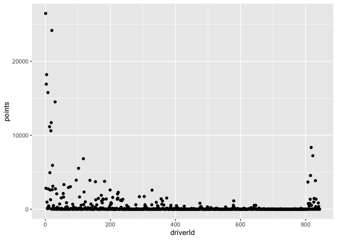
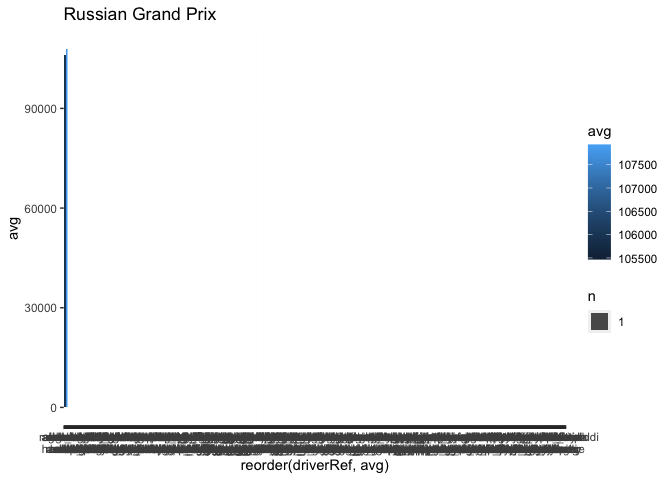

2020-04-05-formula-one
F1 Predictive Modeling
I can’t currently find the source of data but it is an extensive set made of multiple tables for years (1950-2017)
x = c(rep(1,10), 1:5, 1:5, rep(1,10), 9:13, rep(11,10), 9:10)
y <- c(1:10, rep(10, 5), rep(7,5), 1:10, rep(1, 5), 1:10, 8:9)
plot(x,y, pch=19, xlab="", ylab = "", xaxt="n", yaxt="n")

qplot(x= x, y=y)

Data is broken down into multiple csv files which will need to be joined on common parameters to gain any insights:
- Circuits
- Lap Times
- Races
- Drivers
- Driver Standings
- Results
- More used for reference
circuits = read.csv("Data(1950_2017)/circuits.csv")
lapTimes = read.csv("Data(1950_2017)/lapTimes.csv", stringsAsFactors = FALSE)
races = read.csv("Data(1950_2017)/races.csv", stringsAsFactors = FALSE)
## Warning in scan(file = file, what = what, sep = sep, quote = quote, dec = dec, :
## embedded nul(s) found in input
results = read.csv("Data(1950_2017)/results.csv")
drivers = read.csv("Data(1950_2017)/drivers.csv")
driverStandings = read.csv("Data(1950_2017)/driverStandings.csv")
Let’s start by exploring the Drivers dataset.
# What data types are the features in this set?
sapply(drivers, class)
## driverId driverRef number code forename surname
## "integer" "factor" "integer" "factor" "factor" "factor"
## dob nationality url
## "factor" "factor" "factor"
Drivers
F1 is scored in points, looking at which drivers have the most all-time points. Keep in mind this is dating back to 1950. I’m not familiar if the way Grand Prix are scored has changed. It’s safe to say that for our purpose of predicting future grand prix winners, we will narrow our focus to current drivers. However out of curiousity, let’s look at the all time high scorers.
drivers_ = merge(drivers, driverStandings, by="driverId")
driverPoints = drivers_ %>%
group_by(driverId, driverRef, dob) %>%
summarize(points = sum(points))
ggplot(data = driverPoints, aes(x=driverId,y=points, label=driverRef)) + geom_point()

Too much, cut off at 10,000 points and label
fil = as_tibble(driverPoints) %>%
select(driverId, points, driverRef) %>%
group_by(driverId, driverRef) %>%
summarise(points = sum(points))
fil = fil[fil$points > 10000,]
ggplot(data = fil, aes(x=driverId, y = points, label = driverRef)) + geom_point() + geom_label()

Not a very good visual, we can better compare the drivers points with a bar/histogram style
ggplot(data = fil, aes(x=reorder(driverRef, points), y=points, fill=points)) + geom_bar(stat="sum") + ggtitle("Top drivers by points") +
xlab("Driver Name") + ylab("Points") +
scale_x_discrete(labels = function(labels) {
fixedLabels <- c()
for(n in 1:length(labels)) {
fixedLabels[n] <- paste0(ifelse(n %% 2 ==0, "" ,"\n"), labels[n])
}
return(fixedLabels)
})

Are all of these drivers still alive and competing?
Races
summary(races)
## raceId year round circuitId
## Min. : 1 Min. :1950 Min. : 1.000 Min. : 1.00
## 1st Qu.: 250 1st Qu.:1974 1st Qu.: 4.000 1st Qu.: 9.00
## Median : 499 Median :1990 Median : 8.000 Median :18.00
## Mean : 500 Mean :1989 Mean : 8.234 Mean :21.76
## 3rd Qu.: 748 3rd Qu.:2005 3rd Qu.:12.000 3rd Qu.:30.00
## Max. :1009 Max. :2018 Max. :21.000 Max. :73.00
## name date time url
## Length:997 Length:997 Length:997 Length:997
## Class :character Class :character Class :character Class :character
## Mode :character Mode :character Mode :character Mode :character
##
##
##
Let’s do some EDA on the circuits. Take a look at which races have the shortest lap time.
driver_laps <- merge(races, lapTimes, by = "raceId")
head(driver_laps)
## raceId year round circuitId name date time.x
## 1 1 2009 1 1 Australian Grand Prix 2009-03-29 06:00:00
## 2 1 2009 1 1 Australian Grand Prix 2009-03-29 06:00:00
## 3 1 2009 1 1 Australian Grand Prix 2009-03-29 06:00:00
## 4 1 2009 1 1 Australian Grand Prix 2009-03-29 06:00:00
## 5 1 2009 1 1 Australian Grand Prix 2009-03-29 06:00:00
## 6 1 2009 1 1 Australian Grand Prix 2009-03-29 06:00:00
## url driverId lap position
## 1 http://en.wikipedia.org/wiki/2009_Australian_Grand_Prix 7 5 15
## 2 http://en.wikipedia.org/wiki/2009_Australian_Grand_Prix 7 6 16
## 3 http://en.wikipedia.org/wiki/2009_Australian_Grand_Prix 7 7 16
## 4 http://en.wikipedia.org/wiki/2009_Australian_Grand_Prix 7 8 16
## 5 http://en.wikipedia.org/wiki/2009_Australian_Grand_Prix 7 9 16
## 6 http://en.wikipedia.org/wiki/2009_Australian_Grand_Prix 7 10 16
## time.y milliseconds
## 1 1:32.565 92565
## 2 1:33.294 93294
## 3 1:30.891 90891
## 4 1:31.645 91645
## 5 1:52.298 112298
## 6 1:40.160 100160
# Only looking at last 10 years
driver_laps <- driver_laps[driver_laps$year > 2008,]
#Add driver name to set
driver_laps <- merge(driver_laps, drivers[,1:2], by = "driverId")
length(unique(driver_laps$circuitId))
## [1] 26
length(unique(driver_laps$raceId))
## [1] 173
temp = driver_laps %>%
group_by(driverRef, circuitId, raceId, name)
prix_list = races[races$year > 2015,]
prix_list = unique(prix_list$name)
temp = temp[as.character(temp$name) %in% prix_list,]
unique(temp$circuitId)
## [1] 73 18 11 10 20 6 15 3 24 4 9 1 7 17 2 70 32 12 13 14 71 22 69
for(i in 1:length(prix_list)){
set = temp %>%
group_by(driverRef) %>%
filter(driverRef %in% driverId_vec) %>%
filter(name == prix_list[i]) %>%
summarise(avg = mean(milliseconds))
driverLapTimePlot = ggplot(data = set, aes(x= reorder(driverRef,avg), y = avg, fill = avg)) + geom_bar(stat="sum") + ggtitle(prix_list[i]) + scale_x_discrete(labels = function(labels){
fixedLabels = c()
for(n in 1:length(labels)){
fixedLabels[n] = paste0(ifelse(n %% 2 == 0, "", "\n"), labels[n])
}
return(fixedLabels)
}
)
print(driverLapTimePlot)
}
## Warning: Removed 836 rows containing non-finite values (stat_sum).

## Warning: Removed 836 rows containing non-finite values (stat_sum).

## Warning: Removed 836 rows containing non-finite values (stat_sum).
## Warning: Removed 838 rows containing non-finite values (stat_sum).
## Warning: Removed 842 rows containing non-finite values (stat_sum).
Results
summary(results)
## resultId raceId driverId constructorId
## Min. : 1 Min. : 1.0 Min. : 1.0 Min. : 1.00
## 1st Qu.: 5945 1st Qu.:273.0 1st Qu.: 55.0 1st Qu.: 6.00
## Median :11889 Median :478.0 Median :154.0 Median : 25.00
## Mean :11889 Mean :487.2 Mean :226.5 Mean : 46.28
## 3rd Qu.:17833 3rd Qu.:718.0 3rd Qu.:314.0 3rd Qu.: 57.00
## Max. :23781 Max. :988.0 Max. :843.0 Max. :210.00
##
## number grid position positionText
## Min. : 0.00 Min. : 0.00 Min. : 1.000 R :8517
## 1st Qu.: 7.00 1st Qu.: 5.00 1st Qu.: 4.000 F :1368
## Median : 15.00 Median :11.00 Median : 7.000 3 : 986
## Mean : 16.97 Mean :11.27 Mean : 7.782 4 : 986
## 3rd Qu.: 23.00 3rd Qu.:17.00 3rd Qu.:11.000 2 : 984
## Max. :208.00 Max. :34.00 Max. :33.000 5 : 982
## NA's :6 NA's :10550 (Other):9954
## positionOrder points laps time
## Min. : 1.00 Min. : 0.000 Min. : 0.00 :17773
## 1st Qu.: 7.00 1st Qu.: 0.000 1st Qu.: 20.00 +8:22.19: 5
## Median :13.00 Median : 0.000 Median : 52.00 +1:29.6 : 4
## Mean :13.08 Mean : 1.601 Mean : 45.27 0.7 : 4
## 3rd Qu.:19.00 3rd Qu.: 1.000 3rd Qu.: 66.00 46.2 : 4
## Max. :39.00 Max. :50.000 Max. :200.00 5.7 : 4
## (Other) : 5983
## milliseconds fastestLap rank fastestLapTime
## Min. : 1474899 Min. : 2.00 Min. : 0.0 :18394
## 1st Qu.: 5442948 1st Qu.:29.00 1st Qu.: 5.0 01:17.2: 28
## Median : 5859428 Median :44.00 Median :11.0 01:16.5: 27
## Mean : 6303313 Mean :41.06 Mean :10.6 01:16.8: 26
## 3rd Qu.: 6495440 3rd Qu.:53.00 3rd Qu.:16.0 01:28.0: 26
## Max. :15090540 Max. :78.00 Max. :24.0 01:19.1: 24
## NA's :17774 NA's :18394 NA's :18246 (Other): 5252
## fastestLapSpeed statusId
## :18394 Min. : 1.00
## 189.423: 3 1st Qu.: 1.00
## 195.933: 3 Median : 11.00
## 196.785: 3 Mean : 18.24
## 200.091: 3 3rd Qu.: 16.00
## 201.33 : 3 Max. :136.00
## (Other): 5368
summary(drivers)
## driverId driverRef number code forename
## Min. : 1.0 abate : 1 Min. : 2.00 :757 John : 14
## 1st Qu.:211.2 abecassis: 1 1st Qu.:10.25 BIA : 2 Mike : 14
## Median :421.5 acheson : 1 Median :21.50 HAR : 2 Peter : 13
## Mean :421.5 adamich : 1 Mean :30.50 MAG : 2 Bill : 11
## 3rd Qu.:631.8 adams : 1 3rd Qu.:38.25 VER : 2 Tony : 11
## Max. :843.0 ader : 1 Max. :99.00 ALB : 1 Bob : 10
## (Other) :836 NA's :804 (Other): 76 (Other):769
## surname dob nationality
## Taylor : 5 02/10/1921: 2 British :162
## Wilson : 4 04/09/1920: 2 American :157
## Brabham : 3 05/05/1932: 2 Italian : 99
## Brown : 3 06/06/1923: 2 French : 73
## Fittipaldi: 3 06/10/1918: 2 German : 49
## Hill : 3 12/12/1946: 2 Brazilian: 31
## (Other) :821 (Other) :830 (Other) :271
## url
## : 1
## http://en.wikipedia.org/wiki/%C3%89lie_Bayol : 1
## http://en.wikipedia.org/wiki/%C3%89ric_Bernard : 1
## http://en.wikipedia.org/wiki/%C3%89rik_Comas : 1
## http://en.wikipedia.org/wiki/%C3%93scar_Alfredo_G%C3%A1lvez: 1
## http://en.wikipedia.org/wiki/A.J._Foyt : 1
## (Other) :836
Let’s create our MASTER set here, containing all info we can foresee as necessary going forward.
Including Plots
You can also embed plots, for example:


Note that the echo = FALSE parameter was added to the code chunk to prevent printing of the R code that generated the plot.